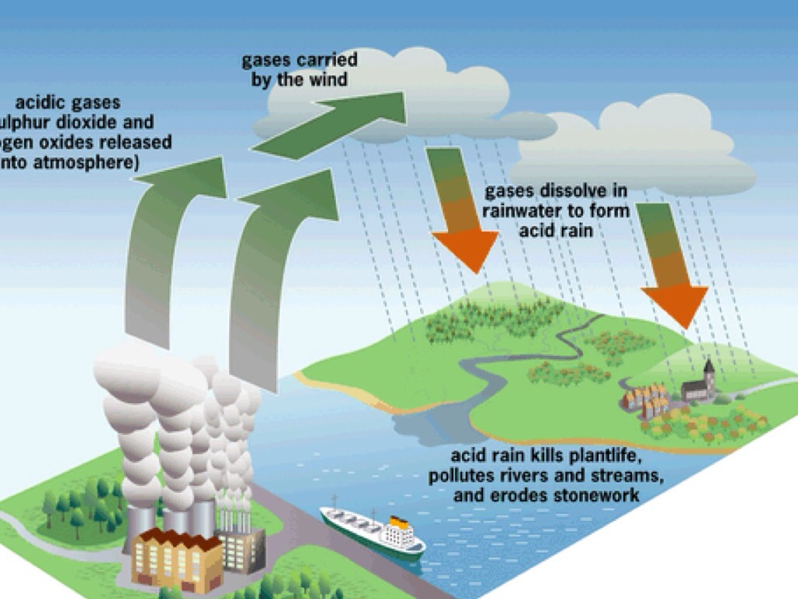
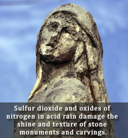

What is Acid Rain
Acid rain is rain consisting of water droplets that are unusually acidic because of atmospheric pollution - most notably the excessive amounts of sulfur and nitrogen released by cars and industrial processes. Acid rain is also called acid deposition because this term includes other forms of acidic precipitation such as snow.
Acidic deposition occurs in two ways: wet and dry. Wet deposition is any form of precipitation that removes acids from the atmosphere and deposits them on the Earth’s surface.
Dry deposition polluting particles and gases stick to the ground via dust and smoke in the absence of precipitation. This form of deposition is dangerous however because precipitation can eventually wash pollutants into streams, lakes, and rivers.
Acidity itself is determined based on the pH level of the water droplets. PH is the scale measuring the amount of acid in the water and liquid. The pH scale ranges from 0 to 14 with lower pH being more acidic while a high pH is alkaline; seven is neutral. Normal rain water is slightly acidic and has a pH range of 5.3-6.0. Acid deposition is anything below that scale. It is also important to note that the pH scale is logarithmic and each whole number on the scale represents a 10-fold change.
Today, acid deposition is present in the north-eastern United States, south-eastern Canada, and much of Europe including portions of Sweden, Norway, and Germany. In addition, parts of South Asia, South Africa, Sri Lanka, and Southern India are all in danger of being impacted by acid deposition in the future.
Causes and History of Acid Rain
 Acid deposition can occur via natural sources like volcanoes but it is mainly caused by the release of sulfur dioxide and nitrogen oxide during fossil fuel combustion. When these gases are discharged into the atmosphere they react with the water, oxygen, and other gases already present there to form sulfuric acid, ammonium nitrate, and nitric acid. These acids then disperse over large areas because of wind patterns and fall back to the ground as acid rain or other forms of precipitation.
The gases responsible for acid deposition are normally a byproduct of electric power generation and the burning of coal. As such, it began entering the atmosphere in large amounts during the Industrial Revolution and was first discovered by a Scottish chemist, Robert Angus Smith, in 1852. In that year, he discovered the relationship between acid rain and atmospheric pollution in Manchester, England.
Although it was discovered in the 1800s, acid deposition did not gain significant public attention until the 1960s and the term acid rain was coined in 1972. Public attention further increased in the 1970s when the New York Times published reports about problems occurring in the Hubbard Brook Experimental Forest in New Hampshire.
Effects of Acid Rain
 After studying the Hubbard Brook Forest and other areas today, there are several important impacts of acid deposition on both natural and man-made environments. Aquatic settings are the most clearly impacted by acid deposition though because acidic precipitation falls directly into them. Both dry and wet deposition also runs off of forests, fields, and roads and flows into lakes, rivers, and streams.
As this acidic liquid flows into larger bodies of water, it is diluted but over time, acids can accrue and lower the overall pH of the body. Acid deposition also causes clay soils to release aluminum and magnesium further lowering the pH in some areas. If the pH of a lake drops below 4.8, its plants and animals risk death and it is estimated that around 50,000 lakes in the United States and Canada have a pH below normal (about 5.3 for water). Several hundred of these have a pH too low to support any aquatic life.
Aside from aquatic bodies, acid deposition can significantly impact forests. As acid rain falls on trees, it can make them lose their leaves, damage their bark, and stunt their growth. By damaging these parts of the tree, it makes them vulnerable to disease, extreme weather, and insects. Acid falling on a forest’s soil is also harmful because it disrupts soil nutrients, kills microorganisms in the soil, and can sometimes cause a calcium deficiency. Trees at high altitudes are also susceptible to problems induced by acidic cloud cover as the moisture in the clouds blankets them.
Damage to forests by acid rain is seen all over the world, but the most advanced cases are in Eastern Europe. It’s estimated that in Germany and Poland, half of the forests are damaged, while 30% in Switzerland have been affected.
Finally, acid deposition also has an impact on architecture and art because of its ability to corrode certain materials. As acid lands on buildings (especially those constructed with limestone) it reacts with minerals in the stones sometimes causing it to disintegrate and wash away. Acid deposition can also corrode modern buildings, cars, railroad tracks, airplanes, steel bridges, and pipes above and below ground.